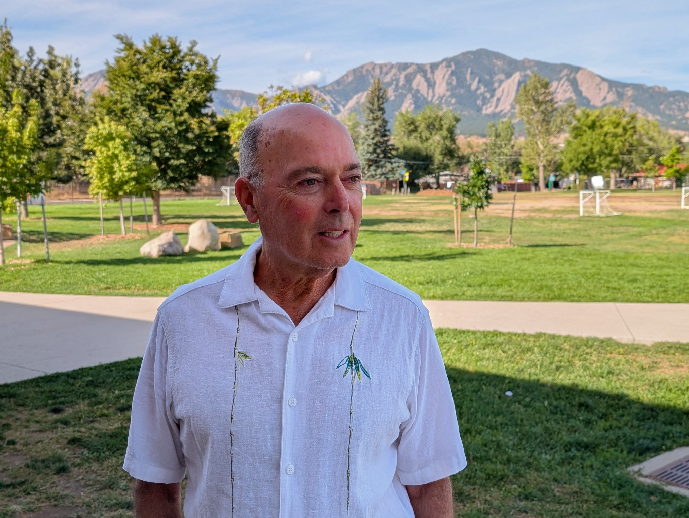

Use Real Data
Evaluate projects using local crash data, close calls, traffic impacts, and post-construction results.
LEE GILBERT FOR BOULDER CITY COUNCIL
Practical transportation policy built on local data, clear design, public input, and accountability.
Boulder can make our streets safer without making them unnecessarily complicated. I’m running to bring independent review and common sense to major transportation decisions.

MY PLAN
Safety matters. So do clarity, traffic flow, public trust, and whether a project actually works after it is built.
Evaluate projects using local crash data, close calls, traffic impacts, and post-construction results.
Prioritize visibility, understandable intersections, reasonable speeds, and designs people can navigate naturally.
Require meaningful neighborhood input and stronger City Council oversight before major road changes move forward. Major road projects should be subject to a public vote allowing vigorous public debate.
Pause feasibility, engineering work, and grant proposals for new major road projects until they are reevaluated.
Reevaluate protected intersections from 32nd to Mohawk. Consider reverting to the original design, which had a low bicycle accident rate and did not introduce new risks and side-street congestion.
These are unwarranted, reduce a traffic lane, and only increase congestion and confusion.
I support restoring two through lanes in each direction with a straight-through bike lane and removing unnecessary bollards.
Use simple green, yellow, and red left-turn arrows as the default and avoid flashing yellow arrows during a WALK signal where conflicts can occur.
Reactivate and expand Boulder's Crash Dashboard and create a close-call reporting system so future projects can be evaluated with better evidence.
WHY I’M RUNNING
I’m a longtime Boulder resident and have lived near Baseline for decades. I attended CU and earned degrees in electrical engineering, with additional experience in statistics, reliability, and failure analysis.
I believe Boulder can do a better job evaluating major transportation projects before, during, and after construction.
My campaign began with a simple conclusion: I have lost confidence in the way Boulder plans and implements major road projects. I’m running to offer voters a more transparent, data-driven alternative.
WHAT I WANT TO CHANGE
My campaign focuses on project design, oversight, transparency, and measurable results.
The project introduced complexity and congestion without evidence that the redesign improved bicycle safety.
Evaluate whether these designs fit local conditions instead of assuming one approach is automatically right everywhere.
These Bus-Only lanes are not needed and seem intended to reduce traffic lanes to slow traffic, increasing confusion and congestion.
I support the goal of safer streets, while also believing Boulder should be more rigorous about measuring whether its chosen strategies are actually reducing severe crashes and fatalities.
I believe City Council should critically review major transportation projects rather than simply defer to department expertise. Council should consider referring these projects to a public vote.
I favor excellent visibility, straightforward intersections, clear markings, reasonable speeds, and less unnecessary visual clutter, which I call “visual noise.”
In my review of seven years of Boulder Crash Dashboard data, I found two bicycle accidents between 32nd Street and Mohawk, the stretch where multiple side-street intersections were redesigned.
A BASELINE CASE STUDY
I reviewed bicycle crash data because bicycle safety was a major rationale for the Baseline Project. My analysis led me to question whether the redesign focused on the locations with the greatest documented crash history.
My broader point is simple: before changing a major corridor, Boulder should understand what is happening, where it is happening, and how success will be measured afterward.
Read the supporting analysis →VOLUNTEER
If you agree that Boulder’s major road projects deserve better data, clearer design, and stronger public oversight, I’d appreciate your help sharing the campaign.
Download the printable volunteer flyer below for legal distribution or posting.
Approved by Lee4Boulder campaign. Volunteers: Please distribute or post ONLY Where Allowed.
Better roads. Better decisions.
Lee4Boulder.comTHE STANDARD
“Road projects should balance efficient traffic flow AND safety.”
LEE GILBERT
FULL ANALYSIS
My full 28-page analysis is hosted directly on this website. It covers my background, Boulder transportation history, crash data, protected intersections, the Baseline Project, bike lanes, flashing yellow arrows, and my proposed next steps.
GET IN TOUCH
Additional campaign information, social links, and required disclosures will be added as they become available.